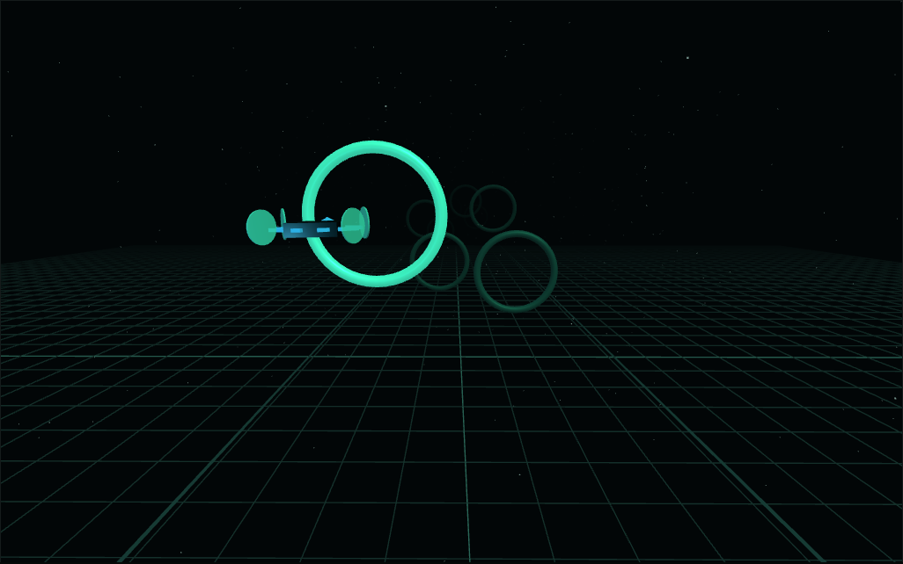
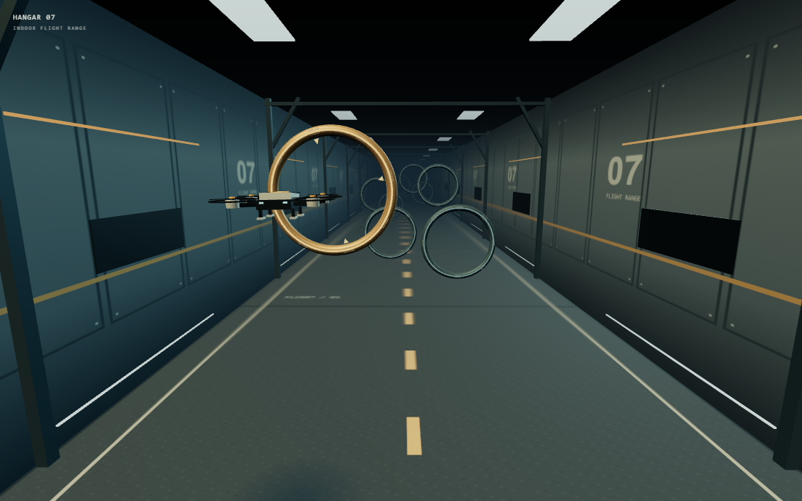
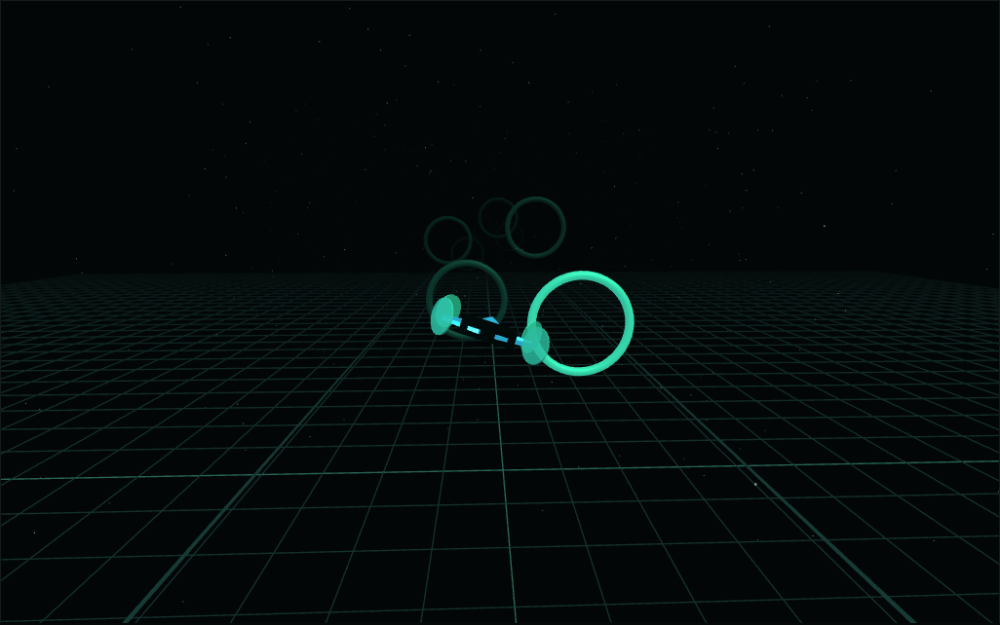
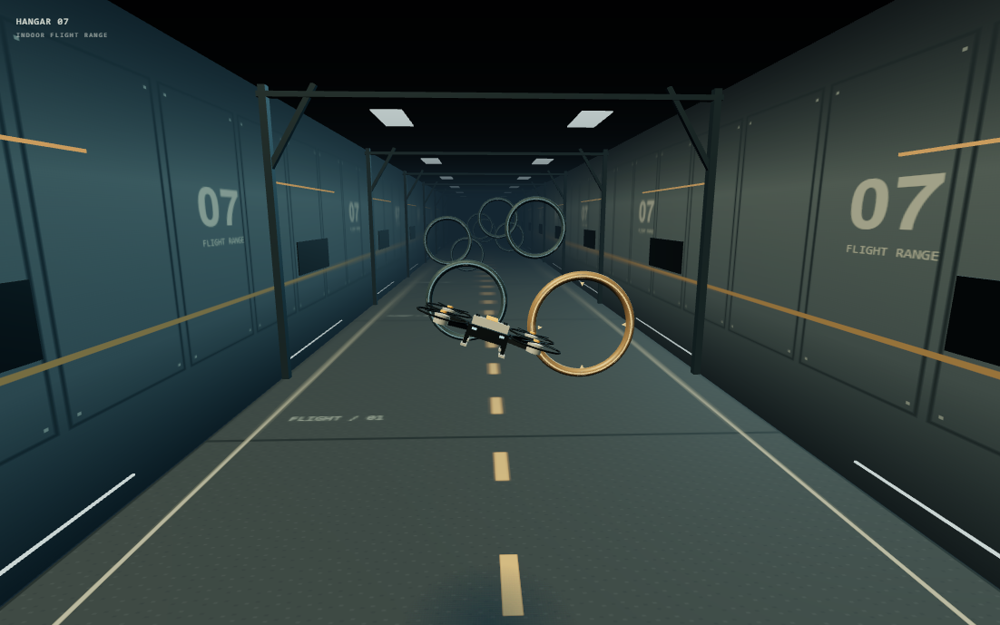
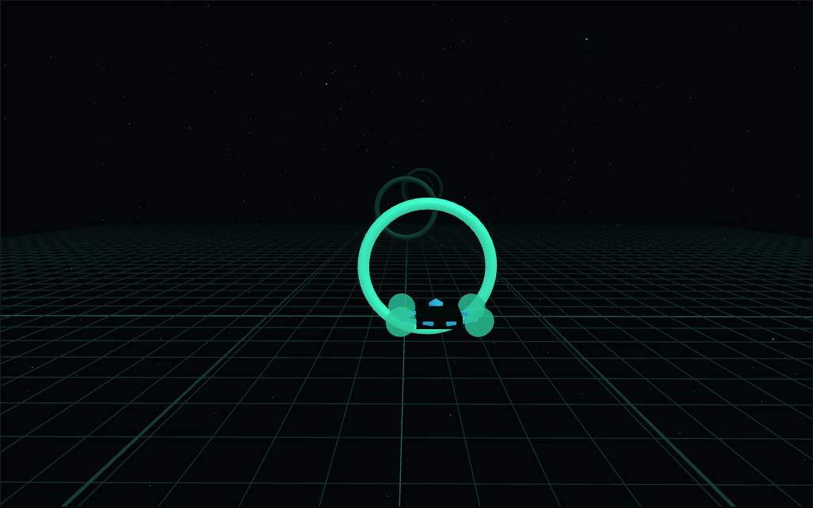
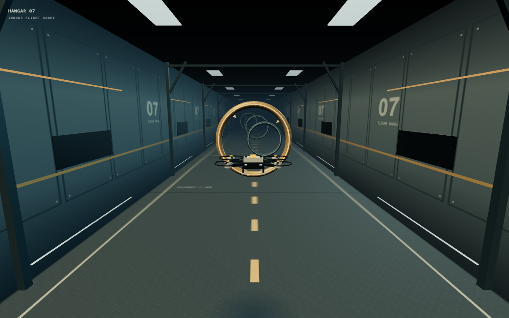
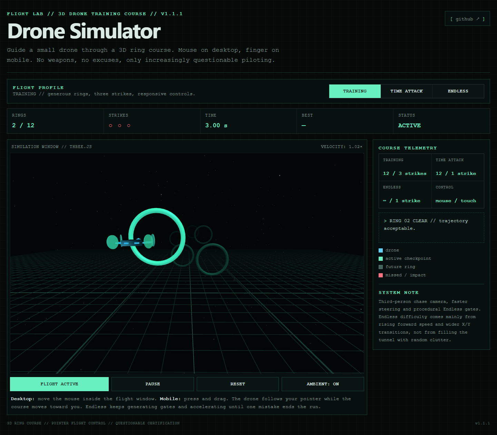
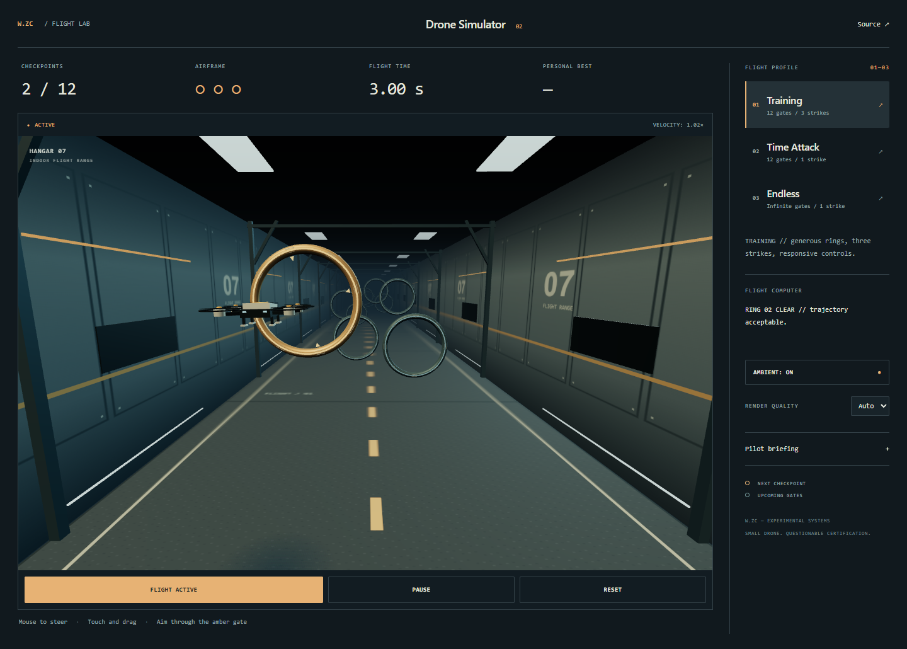
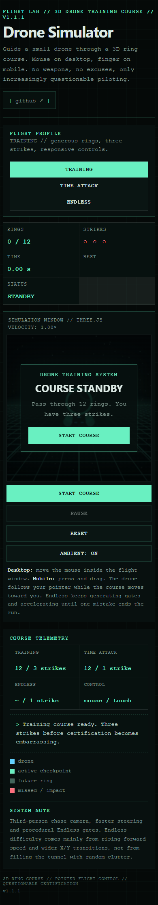
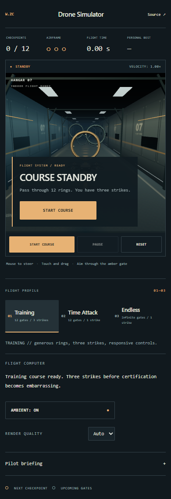

A flight range with architectural depth, a mechanical quadcopter and an amber checkpoint to follow. Original courses, steering, strikes and acceleration.
Nine seconds of actual WebGL frames. Fixed simulation steps at 24 FPS, with automated demonstration steering. Not a real-time performance recording.









